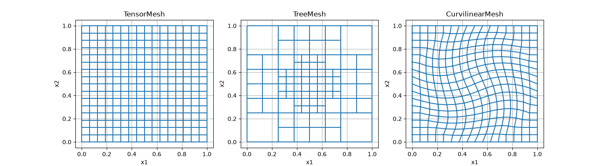
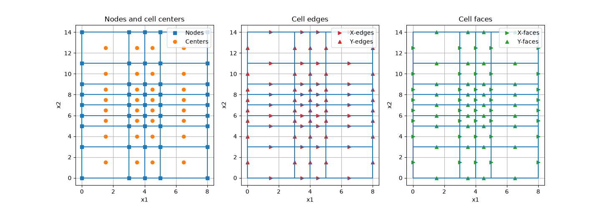

Note
Go to the end to download the full example code.
Overview of Mesh Types#
Here we provide an overview of mesh types and define some terminology. Separate tutorials have been provided for each mesh type.
import numpy as np
import discretize
import matplotlib.pyplot as plt
General Categories of Meshes#
The three main types of meshes in discretize are
Tensor meshes (
discretize.TensorMesh); which includes cylindrical meshes (discretize.CylindricalMesh)Tree meshes (
discretize.TreeMesh): also referred to as QuadTree or OcTree meshesCurvilinear meshes (
discretize.CurvilinearMesh): also referred to as logically rectangular non-orthogonal
Examples for each mesh type are shown below.
ncx = 16 # number of cells in the x-direction
ncy = 16 # number of cells in the y-direction
# create a tensor mesh
tensor_mesh = discretize.TensorMesh([ncx, ncy])
# create a tree mesh and refine some of the cells
tree_mesh = discretize.TreeMesh([ncx, ncy])
def refine(cell):
if np.sqrt(((np.r_[cell.center] - 0.5) ** 2).sum()) < 0.2:
return 4
return 2
tree_mesh.refine(refine)
# create a curvilinear mesh
curvi_mesh = discretize.CurvilinearMesh(
discretize.utils.example_curvilinear_grid([ncx, ncy], "rotate")
)
# Plot
fig, axes = plt.subplots(1, 3, figsize=(14.5, 4))
tensor_mesh.plot_grid(ax=axes[0])
axes[0].set_title("TensorMesh")
tree_mesh.plot_grid(ax=axes[1])
axes[1].set_title("TreeMesh")
curvi_mesh.plot_grid(ax=axes[2])
axes[2].set_title("CurvilinearMesh")

/home/vsts/work/1/s/tutorials/mesh_generation/1_mesh_overview.py:36: FutureWarning: In discretize v1.0 the TreeMesh will change the default value of diagonal_balance to True, which will likely slightly change meshes you have previously created. If you need to keep the current behavior, explicitly set diagonal_balance=False.
tree_mesh = discretize.TreeMesh([ncx, ncy])
Text(0.5, 1.0, 'CurvilinearMesh')
Variable Locations and Terminology#
When solving differential equations on a numerical grid, variables can be defined on:
nodes
cell centers
cell faces
cell edges
Below we show an example for a 2D tensor mesh.
hx = np.r_[3, 1, 1, 3]
hy = np.r_[3, 2, 1, 1, 1, 1, 2, 3]
tensor_mesh2 = discretize.TensorMesh([hx, hy])
# Plot
fig, axes2 = plt.subplots(1, 3, figsize=(14.5, 5))
tensor_mesh2.plot_grid(ax=axes2[0], nodes=True, centers=True)
axes2[0].legend(("Nodes", "Centers"))
axes2[0].set_title("Nodes and cell centers")
tensor_mesh2.plot_grid(ax=axes2[1], edges=True)
axes2[1].legend(("X-edges", "Y-edges"))
axes2[1].set_title("Cell edges")
tensor_mesh2.plot_grid(ax=axes2[2], faces=True)
axes2[2].legend(("X-faces", "Y-faces"))
axes2[2].set_title("Cell faces")

Text(0.5, 1.0, 'Cell faces')
Note that we define X-edges as being edges that lie parallel to the x-axis. And we define X-faces as being faces whose normal lies parallel to the axis. In 3D, the difference between edges and faces is more obvious.
Total running time of the script: (0 minutes 0.269 seconds)